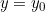

Plavu točku u xy-ravnini možete micati paralelno s osima unutar smeđeg kvadrata. Zajedno s njom se pomiče i pripadna plava točka na plohi.
Pomoću tipki A i D točka se pomiče paralelno s x-osi. U ovom slučaju tangentu šećete po presječnoj krivulji.
Pomoću tipki W i S točka se pomiče paralelno s y-osi. U ovom slučaju mijenjate presječnu krivulju na plohi i pripadnu ravninu  ukoliko je odabrano da bude vidljiva u 3D sceni.